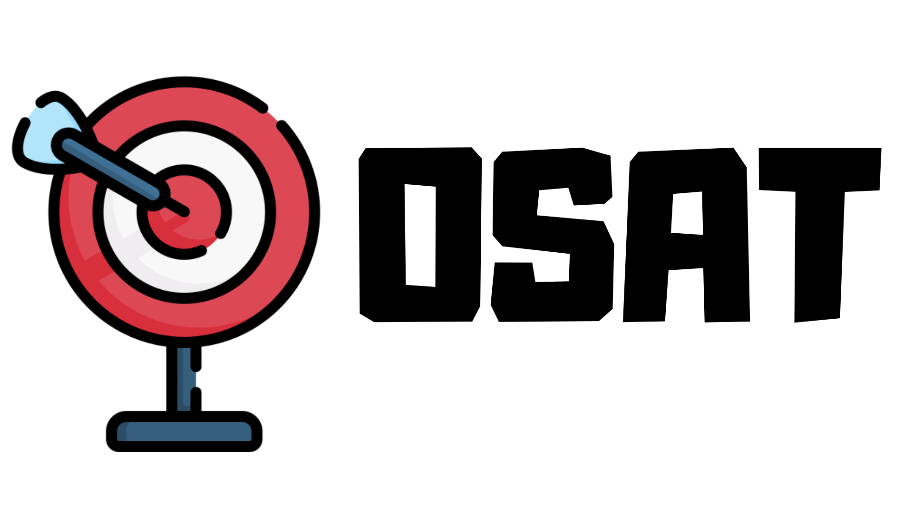
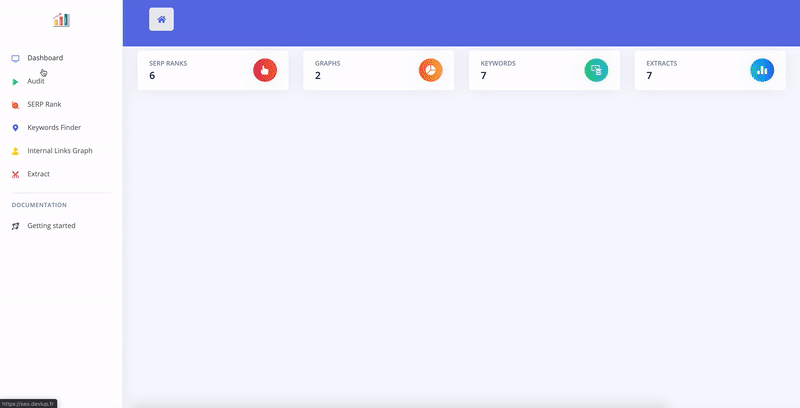
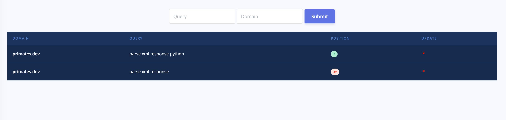
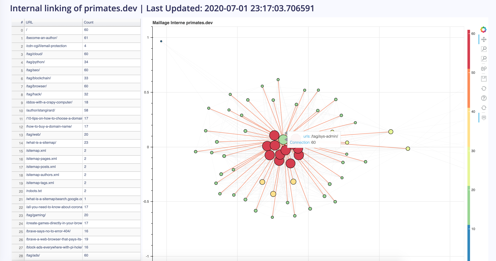
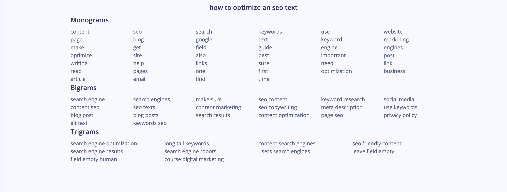
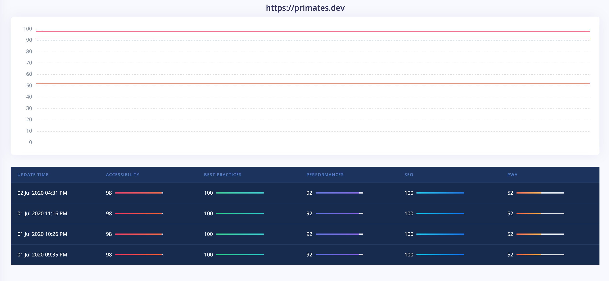
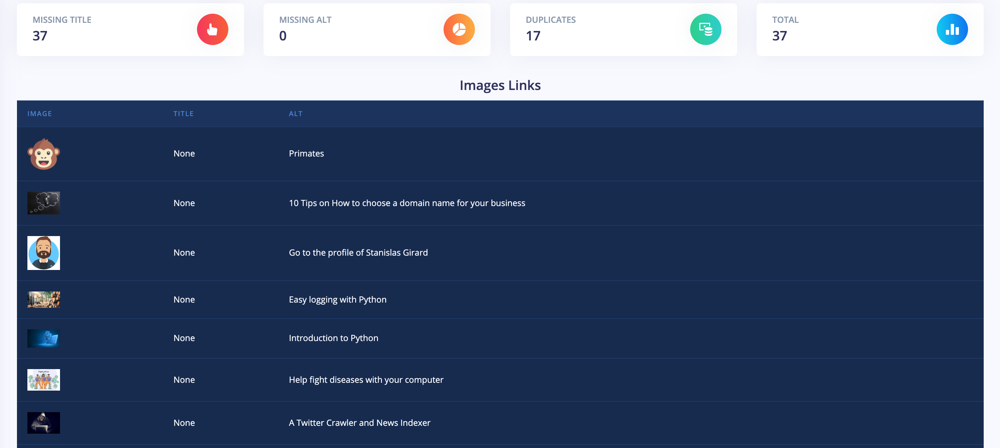

Get started now View it on GitHub
Open source SEO Audits Toolkit
OSAT is a collection of multiple tools to help you in your quest for a better SEO. All of these tools have been grouped into a single web app.
I’ve grown tired of SEO agencies making us pay hundreds of euros for simple tools. I decided to develop OSAT to help users find issues in their website and increase their SEO for free.

Why you need it
- It’s free, easy and open source.
- It has a growing list of features
- It’s easy to install
Features
- Lighthouse Score: Run Lighthouse Audits and keep track of your scores
- SERP Rank - Get the rank of your website on google for specific queries
- Keywords Finder - Finds all the Mono,Bi and Trigrams associated to a specific request. Helps you write content faster.
- Internal Links Graphs - Creates a graph of your website showing all the connections between your pages.
- Extract Headers/Links/Images - Easily extract all the links on your website and their status codes, the headers of a page and all the images.
Installation
You need:
- Python3
- Redis Server
git clone https://github.com/StanGirard/SEOToolkit
cd SEOToolkit
Then install dependencies
pip install -r requirements.txt
Running
Flask
python3 run.py
Redis Server
redis-server
Celery Worker
celery worker -A celery_worker.celery --loglevel=info
Dashboard
You can access the dashboard by going to localhost:5000
Config
If needed create a .env file with information that you would like to overload from config.py
Screenshots
SERP Rank

Internal Links Graphs

Keywords Finder

Lighthouse Audit

Images Extractor
